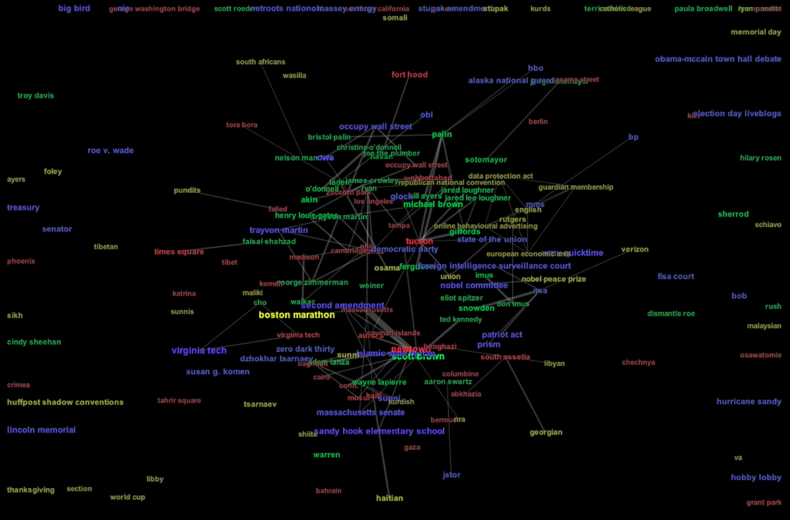
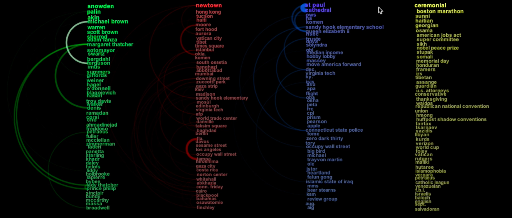
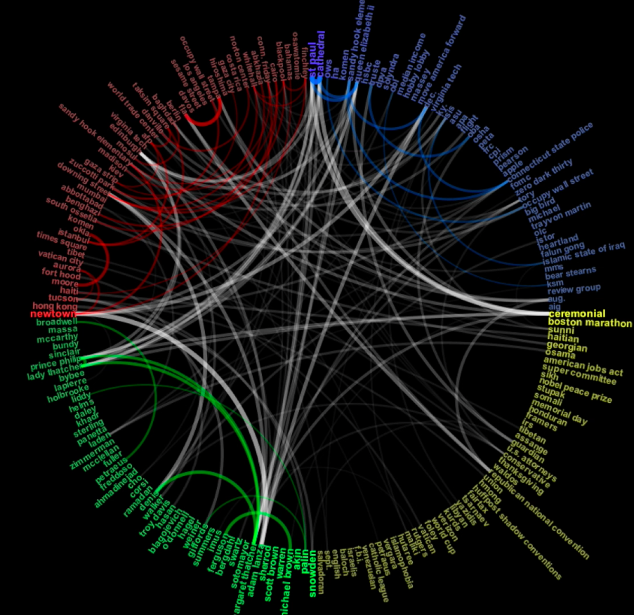
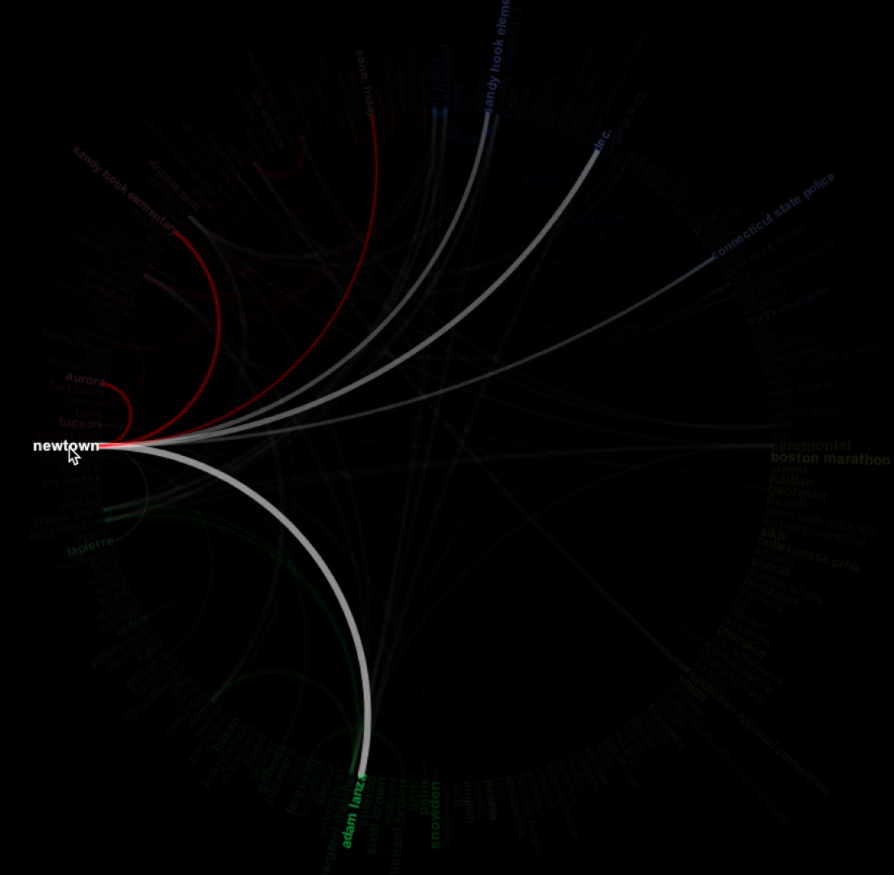

Popular terms from political blogs, such Huffington post and Crooks and Liars . Terms are colored by category: green for people, red for location, blue for organization, and yellow for miscellaneous.




http://stackoverflow.com/questions/14517446/identify-d3-js-graph
http://euclid.psych.yorku.ca/datavis/gallery/bright-ideas.php
http://www.chrisharrison.net/index.php/Visualizations/BibleViz
https://homes.cs.washington.edu/~jheer/files/zoo/
© Last revised: Oct 6th, 2016